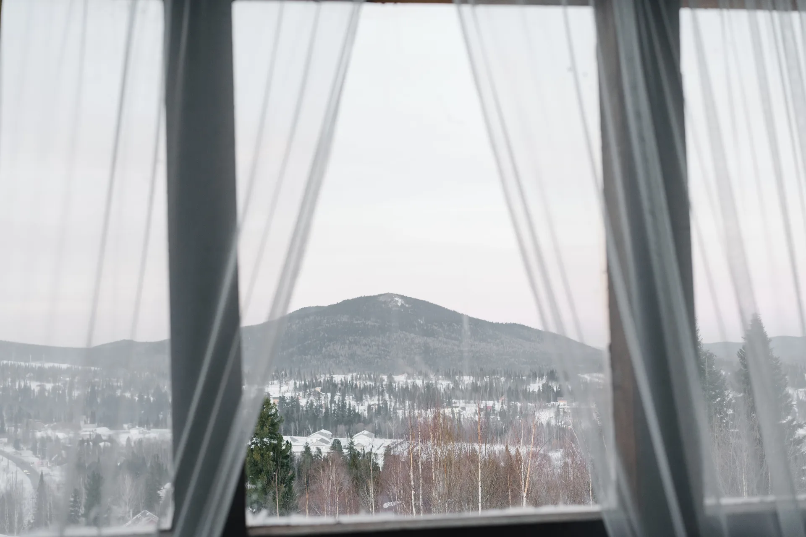

Когда достаточно холодного остекления
Холодное остекление защищает от осадков и ветра. Часто используют алюминиевые системы без терморазрыва. Они не превращают балкон в отапливаемую комнату: зимой температура и влажность зависят от погоды и воздухообмена. Учтите это при хранении вещей.
Что требуется для тёплого пространства
Для тёплого пространства выбирают подходящие стеклопакеты и профиль: ПВХ или алюминий с терморазрывом. Но тепло теряется также через пол, потолок, парапет и стены. Зимнее использование требует комплексного утепления и вентиляции, а не только новых окон.
Оцените основание и размеры
Плита, парапет и крепления должны подходить для проекта. Вес зависит от размеров и материалов. Старое или повреждённое основание может потребовать отдельной оценки. Не выбирайте тяжёлое или панорамное остекление только по ширине проёма — нужна проверка условий установки.
Выберите удобное открывание
Раздвижные створки экономят место, распашные дают другие возможности проветривания. Теплоизоляция зависит от конкретной системы, а не только от открывания. Учтите мебель, сушилку, потолочную отделку и доступ к наружному стеклу для безопасного обслуживания.
Что обсудить на замере
Обсудите назначение балкона. Изменения фасада или пространства могут потребовать согласования — порядок проверяют для конкретного здания.
- Как балкон будет использоваться летом и зимой?
- Подходит ли состояние основания для выбранного проекта?
- Какие участки требуют утепления и как организовать воздухообмен?
- Как открывать, мыть и обслуживать створки?